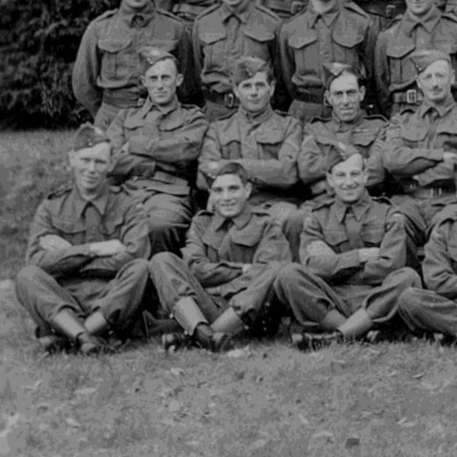
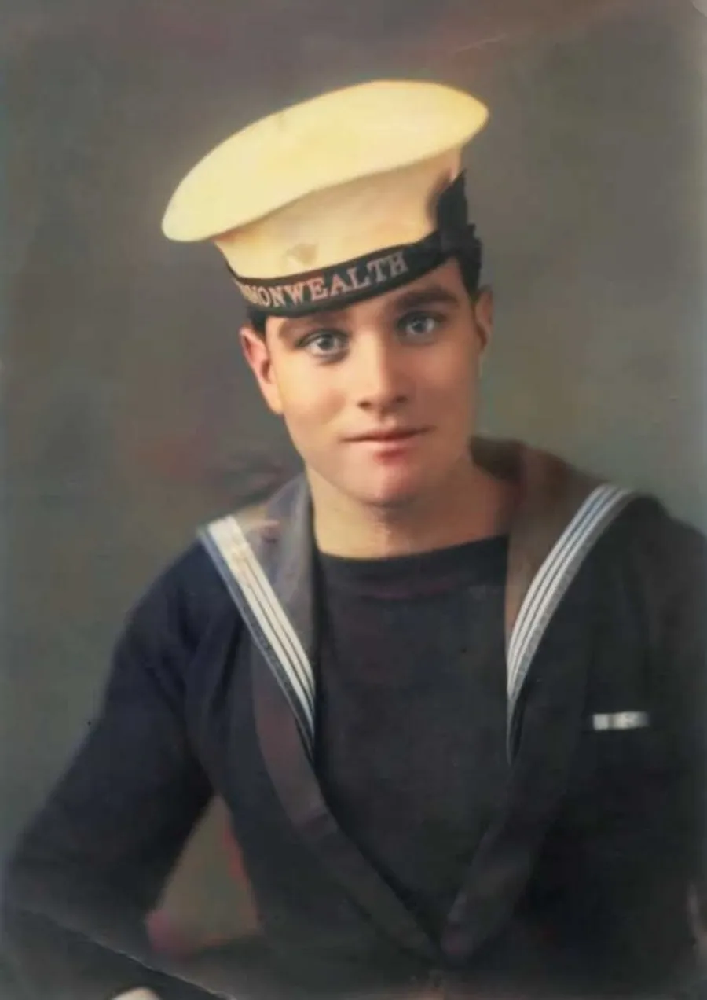
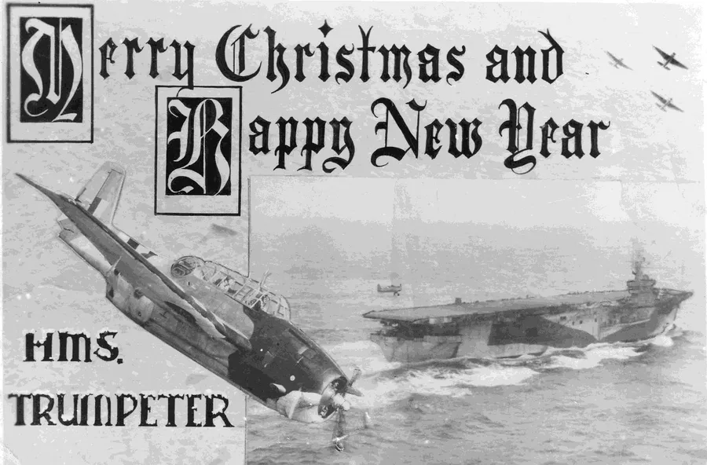
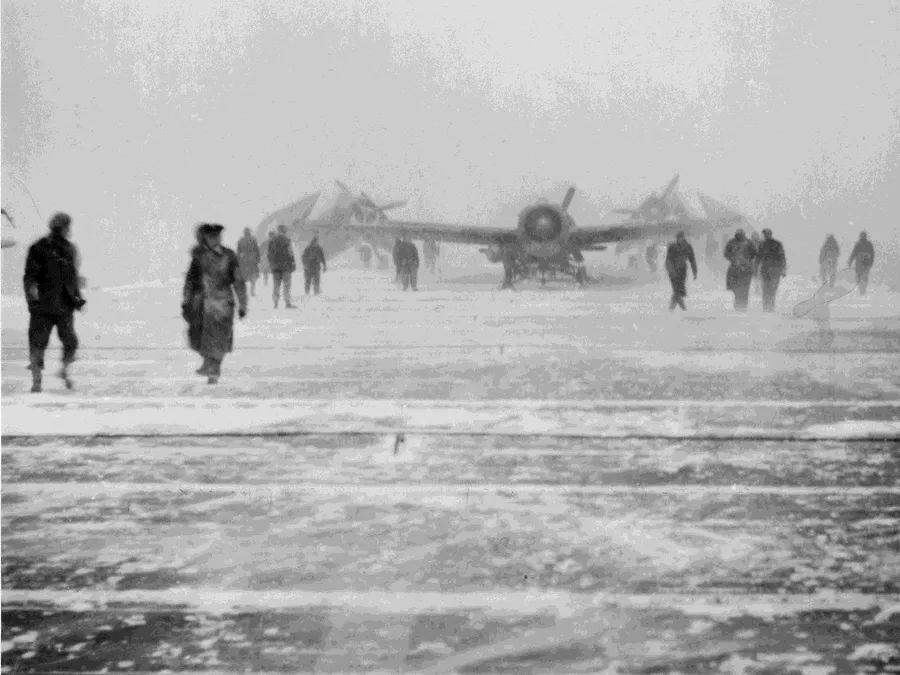
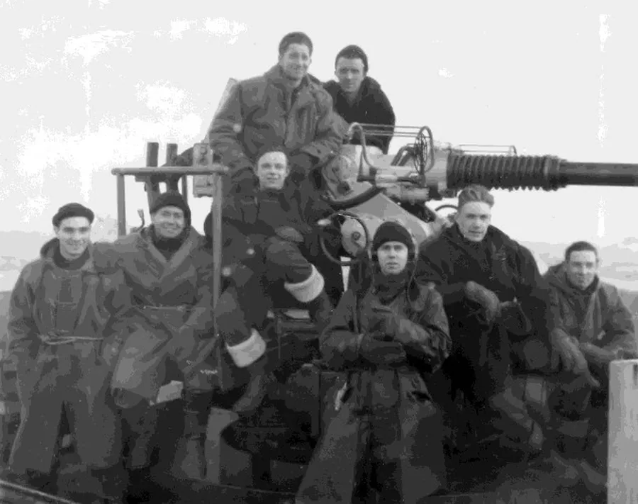
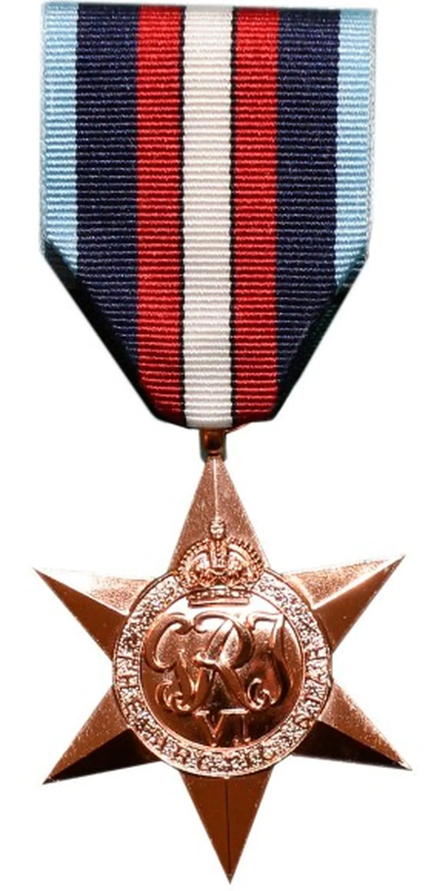

The Arctic Convoys
by Adrian King

The Arctic Convoys of World War Two were ocean going convoys which sailed from the United Kingdom, Iceland and North America to the northern ports in the Soviet Union.
There were seventy-eight convoys from August 1941 until the European Victory in May 1945. The campaign cost the lives of around 3,000 sailors and merchant seamen. Eighty-five merchant ships and sixteen Royal Navy Warships were lost.

A portion of the Verwood Local Defence Volunteers with Arthur King centre front. He must have been one of the younges
At the beginning of the war in 1939 my dad Arthur Ainsley King (1926 – 2013) was only thirteen and still at school. As soon as he was allowed he joined the Local Defence Volunteers in Verwood.

A colourised picture of Arthur Ainsley King taken in 1946 during his time in Japan
He was seventeen and a half years old when he volunteered for naval service in November 1943. By the time he was eighteen in June 1944 the war in Europe was in its final year. The D Day Landings on the Normandy Beaches had taken place and the Allies had begun the long push towards Germany. My father had joined HMS Trumpeter an Escort Carrier and was seeing active service on the Arctic Convoys.
After the Victory in Europe he was stationed in Japan until 1947 but that is another story.
More Images

This was the Card that was sent home at Christmas 1944. Dad often spoke of the Christmas he spent inside the Arctic Circle. HMS Trumpeter was a Ruler Class Escort Carrier built by Todd-Pacific. She was previously named USS Bastion.

HMS Trumpeter was one of twenty-three Lease-Lend ships of the Ruler Class from the US Maritime Commission. The Arctic Convoys had to cope with some of the worst weather conditions on the planet

On board HMS Trumpeter

The Arctic Star was the medal awarded to all who served north of the Arctic Circle. It was not given until March 2013. My nephew James Emberley received it on my Fathers behalf.
Copyright Adrian King